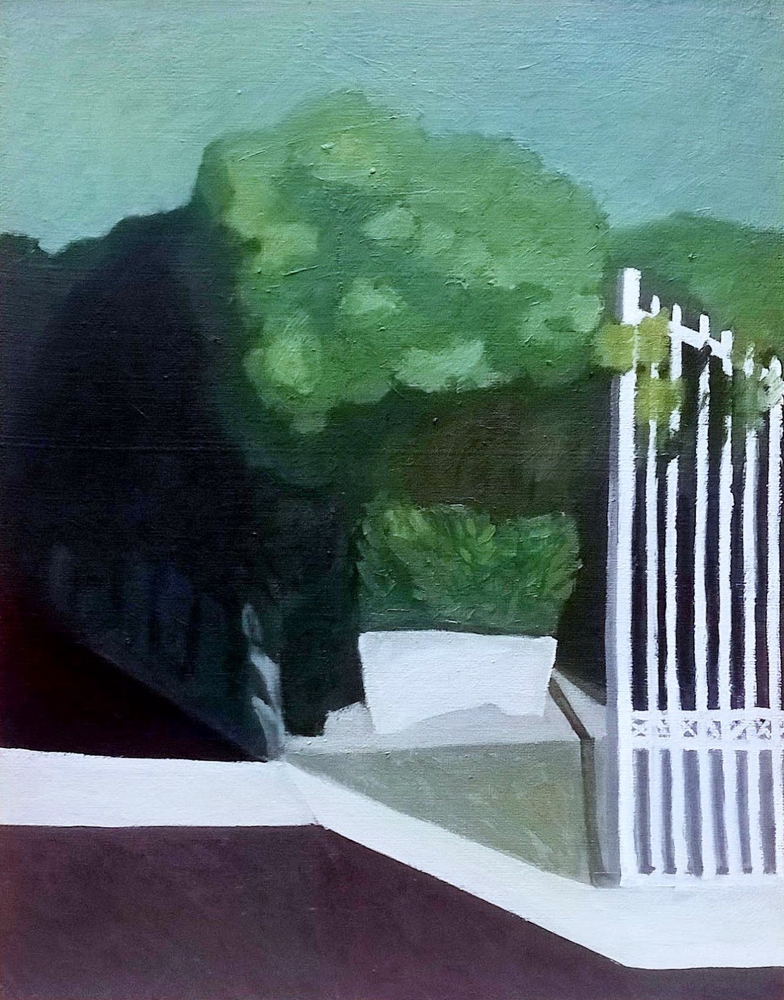
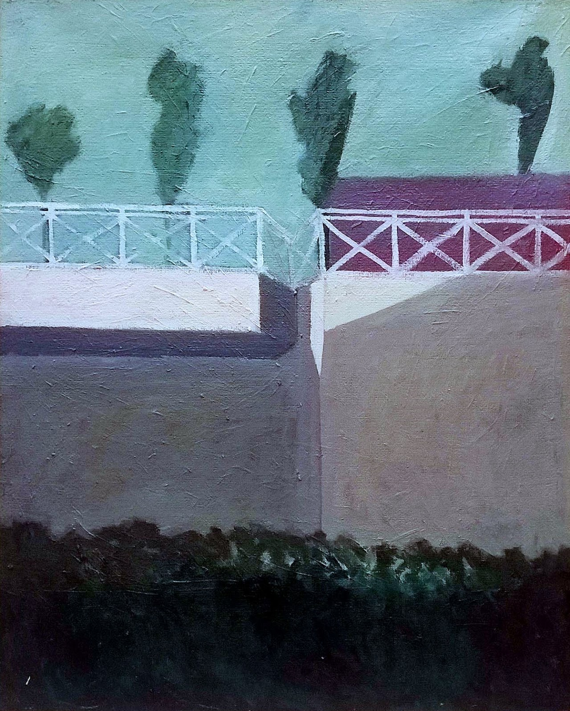
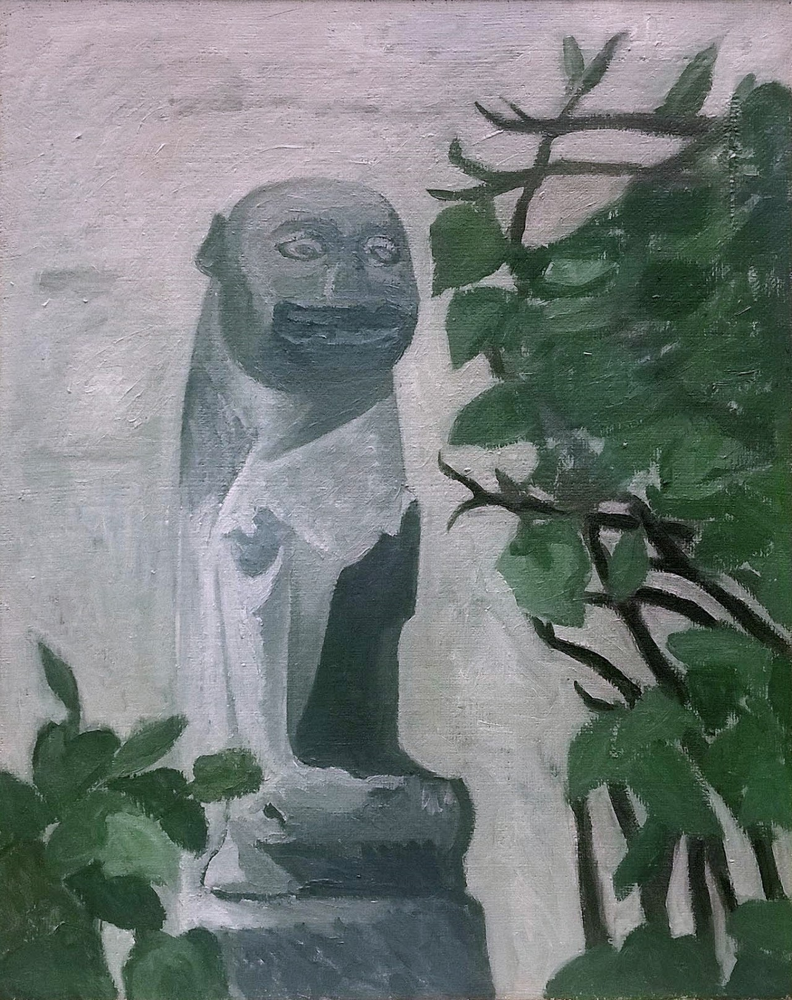
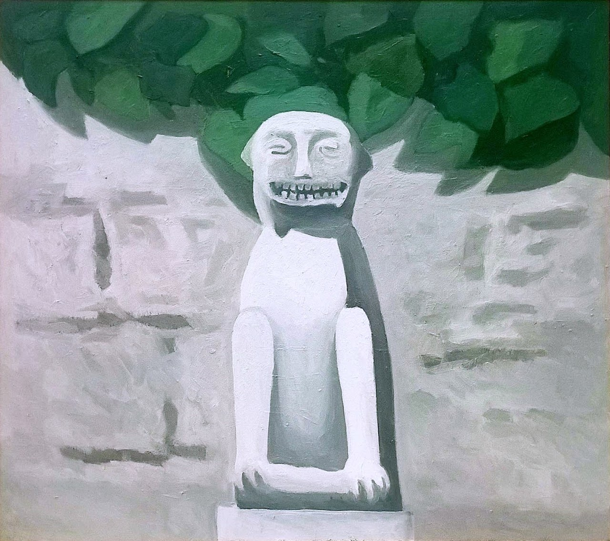
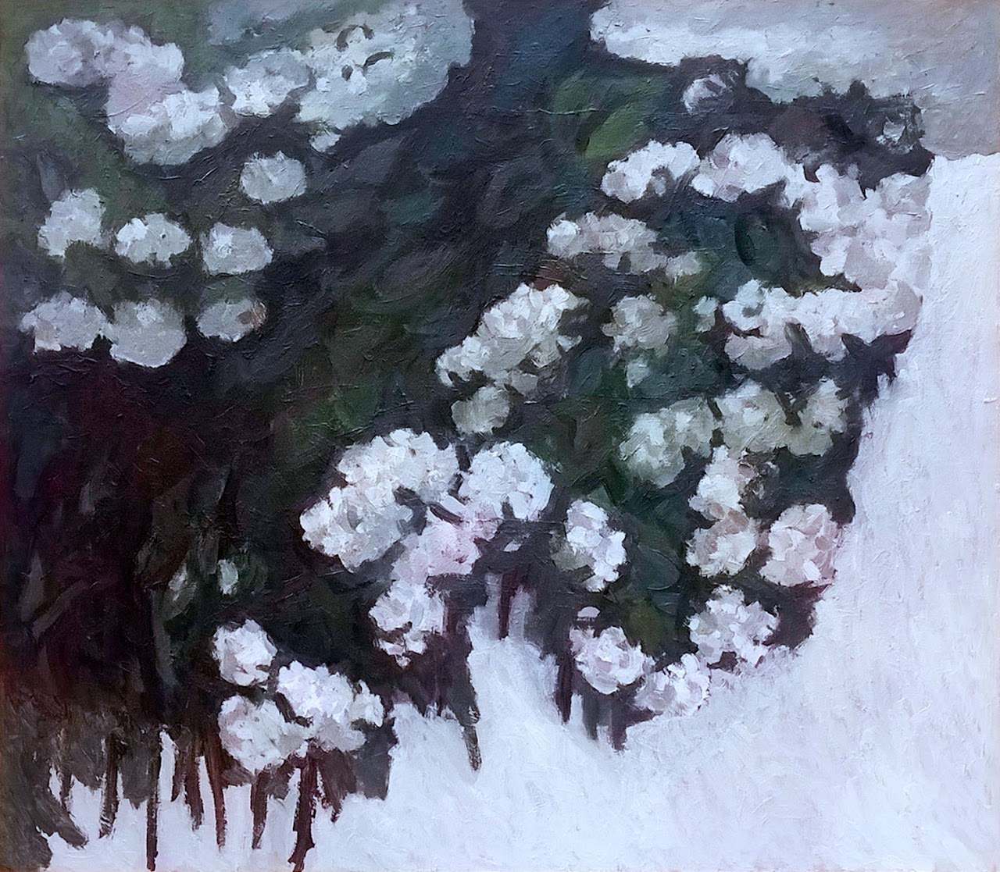
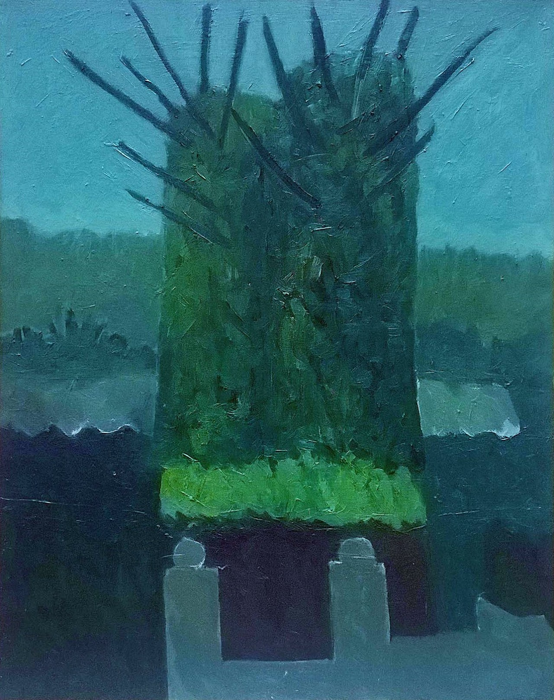

This series explores the relationship between humans and nature. Over time, human interventions — a gate, a retaining wall, a bridge, a monument — become part of the landscape, gradually dissolving into what can be understood as the Architecture of Nature.





